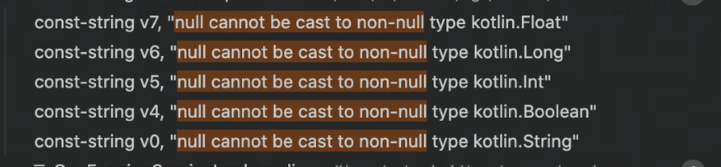

Background
This pass looks for analyzing all exceptions with pure string as constructors and re-mapping them using fewer characters. In java code, we will often see some exceptions with long strings as constructor. Such as: (Java code)
throw new IllegalArgumentException("tag must not be null or empty");
const-string v1, "tag must not be null or empty"
new-instance v0, Ljava/lang/IllegalArgumentException;
invoke-direct {v0, v1}, Ljava/lang/IllegalArgumentException;-><init>(Ljava/lang/String;)V
throw v0
Also, in code what generated by Kotlin, we will see some exceptions generated by Kotlin compiler. Such as null cannot be cast to non-null.

Implement Details
Find all const-string used with single usage
traverse all const-string in cfg structure, and use use-def chains to only use once.
live_range::MoveAwareChains chains(cfg);
auto du_chains = chains.get_def_use_chains();
if (!du_chains.count(insn)) {
continue;
}
auto user = du_chains.at(insn);
if (user.size() > 1) {
continue;
}
Filter them with single string as parameter constructor
Analysis class as exception’s subclass and has single string as constructor parameter.
auto more_checks = [](IRInstruction* it) {
// Check is named as Exception.
auto type = it->get_method()->get_class();
auto exception = type_class(DexType::get_type("Ljava/lang/Exception;"));
auto cls = type_class(type);
if (type->str().find("Exception;") == std::string::npos &&
has_class_in_hierarchy(cls, exception)) {
return false;
}
// Check arguments list and only one string arg.
auto args = it->get_method()->get_proto()->get_args();
if (args->size() != 1 || args->at(0) != type::java_lang_String()) {
return false;
}
return true;
};
Also, we could run tik tok with this pass to generate exceptions profile file to speed up pass search exceptions. I got this result in Tik Tok code :
auto exception_cls_name = std::vector<std::string>{
"Landroid/accounts/NetworkErrorException;",
"Landroid/database/sqlite/SQLiteException;",
"Landroid/os/RemoteException;",
"Landroid/util/AndroidRuntimeException;",
"Landroid/view/InflateException;",
"Lcom/facebook/jni/CppException;",
...
Clean/Remapping with new symbol
auto it = user.begin()->insn;
if (opcode::is_invoke_direct(it->opcode()) &&
(in_list(it->get_method()) || more_checks(it))) {
TRACE(STRBUILD, 1, "CS_STR %s ", str.c_str());
exceptions.emplace(it->get_method()->get_class()->str());
insn->set_string(empty);
}
- use profile list to quick-search
- clean or re-generate ids to re-mapping.